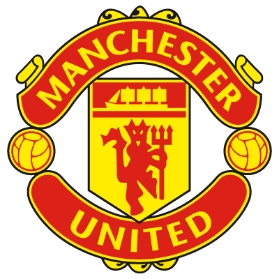

Khalid Abubakr
Student @ Le Wagon
i just like coding , i want to become a developer and work on good projects , i also want to meet new developers and get to know experienced people more and learn from them.
See for yourselfMy Favorite Teams
|  |
Manchester United F.C.Manchester United Football Club is a professional football club based in Old Trafford, Greater Manchester, England, that competes in the Premier League, the top flight of English football. |
 |
Real Madrid C.F.Real Madrid Club de Fútbol, commonly known as Real Madrid, or simply as Real, is a professional football club based in Madrid, Spain. Founded in 1902 as Madrid Football Club, the club has traditionally worn a white home kit since inception. |